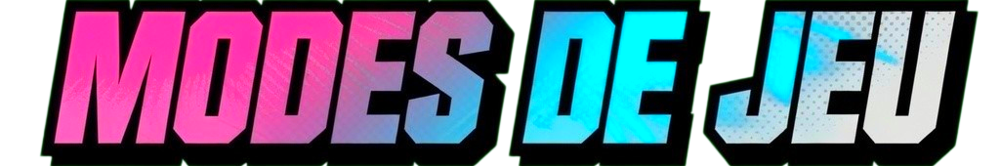
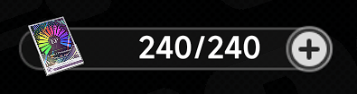
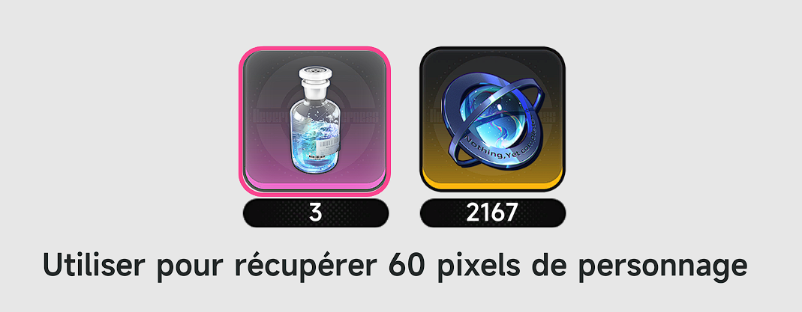
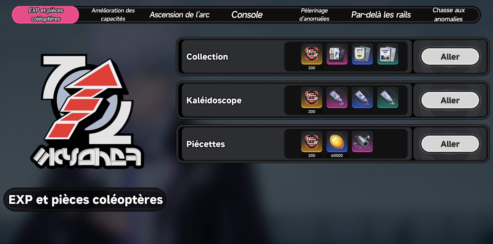
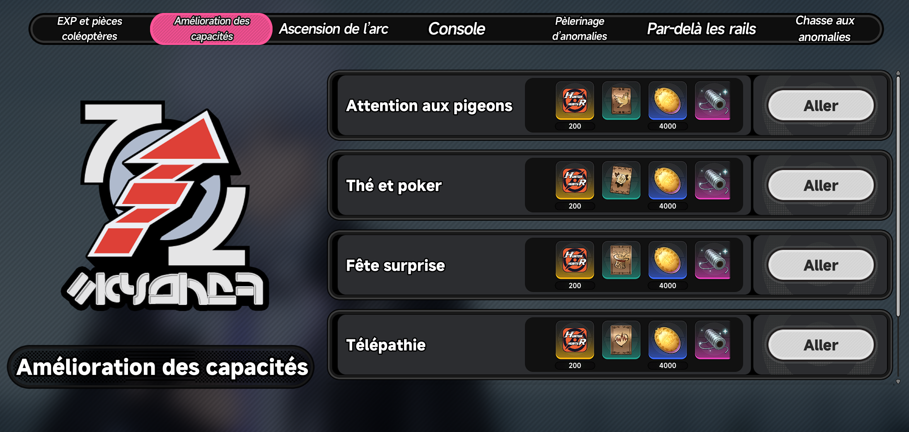
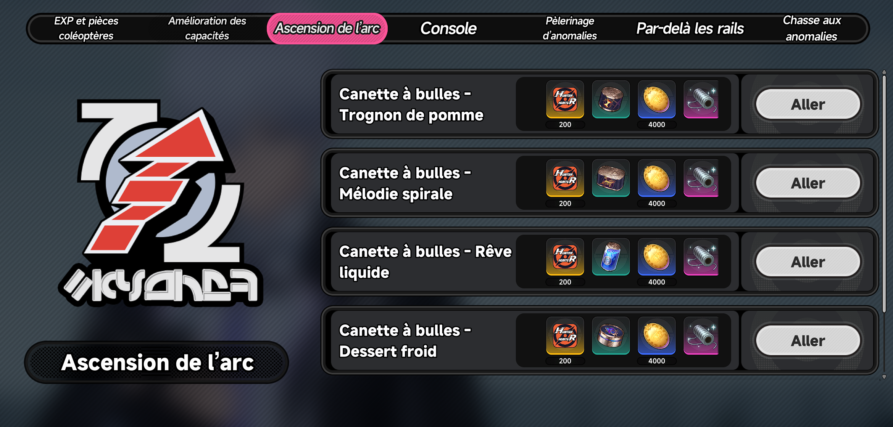
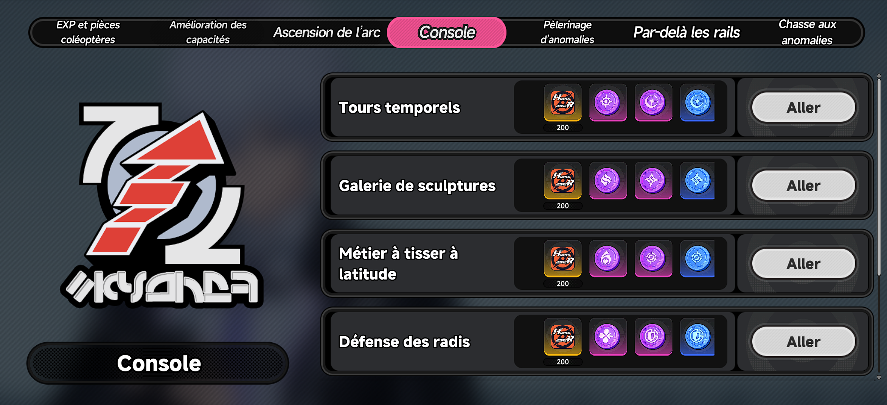
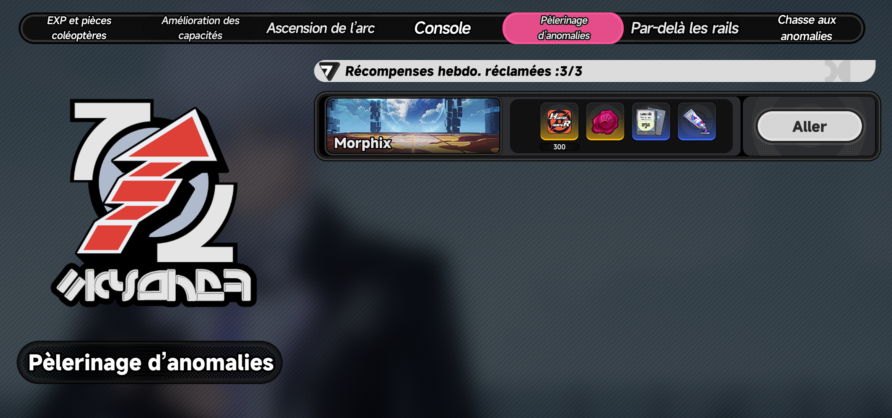

NTE contient plusieurs modes de jeu qui seront utiles dans différents aspects. Accessibles depuis le guide d'exploration, chaque activité consomme de l'énergie : les pixels

Chaque activité en consommera, et vous pouvez également les recharger avec soit une solution antibruit, soit 60 Annulith


Vainquez les ennemis afin d'obtenir des matériaux d'xp d'Esper, des matérieaux d'xp d'arcs et des pièces de coléoptères. 40 pixels par entrée

Obtenez du matériel d'amélioration des capacités d'esper. 40 pixels par entrée

Permet d'obtenir le matériel d'ascension des arcs. 40 pixels par entrée

Obtenez des consoles ainsi que des pièces de tirage pour les modules. 40 pixels par entrée

Allez défaire une nouvelle foi certains boss pour obtenir du matériel d'amélioration de capacité pour certains Espers. 40 pixels par entrée
L'équivalent des tours dans certains autres jeux, avec deux niveau de difficulté. Chacun se compose de 10 niveaux chacun et permmettant d'obtenir 3 journaux ferroviaire par niveau (30 au total). Réinitialisé toutes les 2 semaines et permet d'obtenir des récompenses en échange des journaux.
Combattez les boss de l'histoire ainsi que les boss de monde afin d'obtenir des matériaux d'ascension des Espers. 60 pixels par entrée
Deux type de commisions existent. Les commissions communes, qui sont triées par quartier et qui vous orienteront vers des anomalies comme des combats, des enquètes ou enigmes voir sur d'autres zones. Les commissions à haut risque, qui elles sont des versions plus difficiles de certains boss avec des mécaniques plus compliquées.